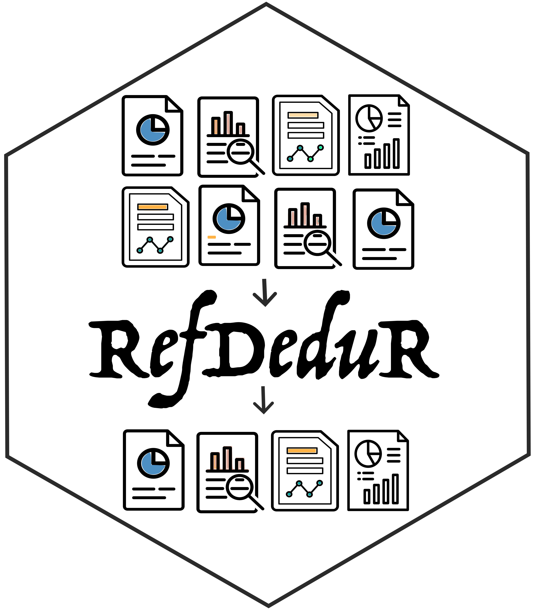

RefDeduR 
RefDeduR is an R package that supports accurate and high-throughput reference deduplication. It is especially useful for large datasets and operates on standard bibliographic information (i.e., it does not require information that cannot be retrieved from a mainstream search engine such as PMID).
The deduplication pipeline is modularized into finely-tuned text normalization, three-step exact matching, and two-step fuzzy matching processes. The package features a decision-tree algorithm and considers preprints and conference proceedings when they co-exist with a peer-reviewed version.
Installation
You can install RefDeduR from GitHub with:
# install.packages("devtools")
devtools::install_github("jxshen311/RefDeduR")Tutorial, website and publication
For a step-by-step tutorial with an example dataset, see https://jxshen311.github.io/RefDeduR/articles/RefDeduR_tutorial.html.
For a complete introduction, check out the website: https://jxshen311.github.io/RefDeduR/.
For more information, check out the preprint on bioRxiv: https://www.biorxiv.org/content/10.1101/2022.09.29.510210v1.
Citation
If you use RefDeduR, please cite: https://www.biorxiv.org/content/10.1101/2022.09.29.510210v1
Acknowledgement
We thank Yutong Wu for the illuminating discussions about the design of RefDeduR. We are also grateful to Ruochen Jiao and Alexander G. McFarland for their help in coding.
We thank Ahmad Roaayala, Eko Purnomo, and Vectors Point from Noun Project for allowing us to use the following icons Research Paper, Report Paper, report, and Stats Report to create the logo.